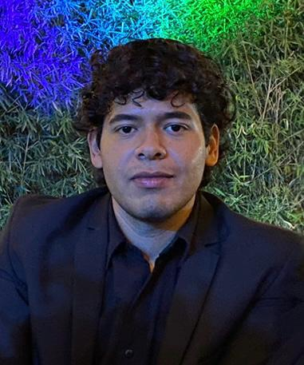

A brief introduction about me..
I am Josmar Heli Hinojosa Tinoco, a 21-year-old Digital Designer, from Durango, Dgo. Mexico. I study at the Technological University of Durango. I specialize in UX/UI, web development and branding , with experience in projects such as a web platform and the creation of mobile-first interfaces. I am passionate about combining creativity and technology to offer innovative visual solutions. I'm still a Junior designer, so some designs are still lacking in experience. However, I try to improve every day and keep learning! I don't have job experience related with design. I've worked in other places, but no as a designer. I hope to find a job soon!
